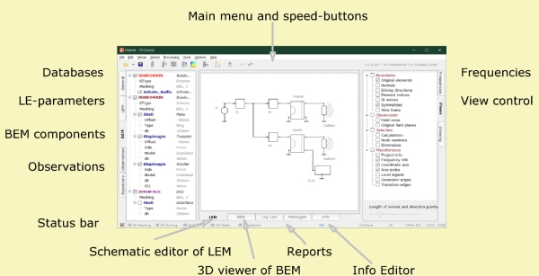

Desktop
| Home |

The desktop organizes the project, provides input forms, renders the acoustic model and reports the processing.
Menu
At the top we have the main-menu which features all functions of AKABAK.
Side Pages - Left
The side pages at the left of the desktop hosts tables of databases, objects and components. Page General provides databases and objects for all components. Page BEM is the collection of components of boundary condition and pressure source of the Boundary Element Method and Direct Sound. Page LEM hosts the Parameter Editor of the selected lumped element component. Page Observation lists all observation-objects. Page Repository serves as a place where objects and components can be stored temporarily.
Side Pages - Right
The side pages at the right of the desktop provides means of control of the desktop. Page Frequencies displays all available frequencies which can be selected for Field display. Page Views checks in and out display features. Page Drawing operates the 3D-Viewer and the Schematic Designer.
Bottom Pages
LEM is the page of the Schematic Designer of the LE-Part.
BEM displays the acoustic boundaries, pressure points and field-calculations in the 3D-Viewer. See chapter BE-Part.
Log Calc outputs parameters informing about the calculation.
Messages lists all warnings and error-messages during calculation.
Info is a pane for adding annotations. See Info Editor.
Statusbar
The Statusbar at the bottom of the desktop reports certain parameters and the state of the calculation progress.
 The icon to the left displays the setting of the
Result File Saving.
If crossed then the feature is disabled, either because of the setting in
menu Options/Preferences-Files or
because there is no valid Release Code.
The icon to the left displays the setting of the
Result File Saving.
If crossed then the feature is disabled, either because of the setting in
menu Options/Preferences-Files or
because there is no valid Release Code.
Hovering the mouse displays the current folder and the version-number of AKABAK
which saved current project-file originally.
BE-Meshing, BE-Solving, LE-Solving, Ob Fields, Ob Spectra indicate the state of the calculation stack. Green means done. Red means unfinished.
MOD indicates that some parameter has been changed.
The progression bar shows the current stage of the calculation process.
Dim and Sym are indicating current settings of spatial dimension and type of symmetry as can be set at menu Global/BEM Parameters.
SI or milli show the current unit-system used for inputting floating point numbers.
CPUs are the numbers of threads used for calculation as can be set at menu Options/Preferences-Processing.
VACS displays the current global way of output of spectral observation results. See also at menu Options/Preferences-Files.